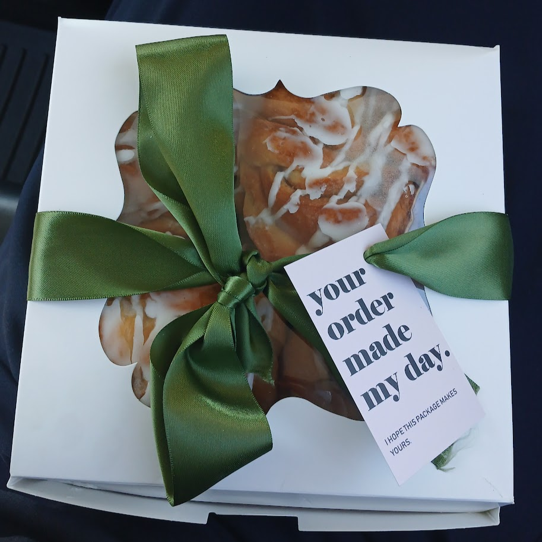

About Us
Our Inspiration

Our recipes are born from generations of Somalis who perfected traditional techniques. For us, establishing The Somali Table means introducing the signature flavors and spices of our home to the baked goods we grew up enjoying in New England. We create fusion desserts that boast the best of both worlds!
The vibrant spices of Mogadishu's markets meet New England's classic desserts in every bite. We honor this fusion through:
- Somali culinary techniques passed down for generations
- Highest quality ingredients
- Traditional spice blends
All our desserts and baked goods tell a story of cultural connection and culinary innovation.